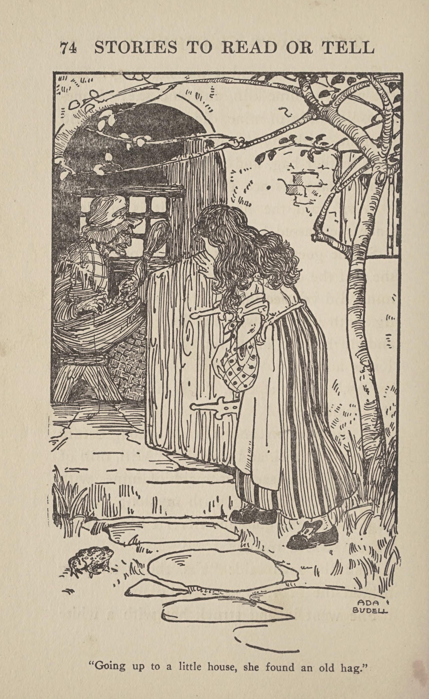

This page presents a digitized copy of Stories to Read or Tell from Fairy Tales and Folklore, a 1911 collection edited by Laure Claire Foucher. The book contains fairy tales and folklore intended to be read or told to an audience.
Stories to Read or Tell from Fairy Tales and Folklore was published in New York by Moffat, Yard and Company in 1911. Laure Claire Foucher selected and edited the stories, and the book includes illustrations.
This book is relevant to the study of fairy-tale retellings because it represents one historical way that traditional stories and folklore were collected, edited, illustrated, published, and presented to readers. The digitized version allows the historical book to be viewed and studied online.
The original digitized book is available through the Library of Congress.
View the book at the Library of Congress
The Library of Congress provides this cultural object in several digital formats, including online text, images, and PDF. The Library also provides structured metadata through additional metadata formats and digital services.